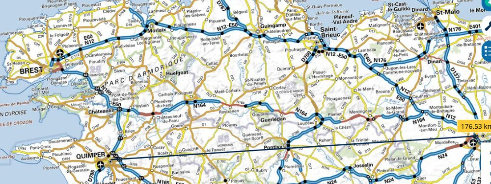
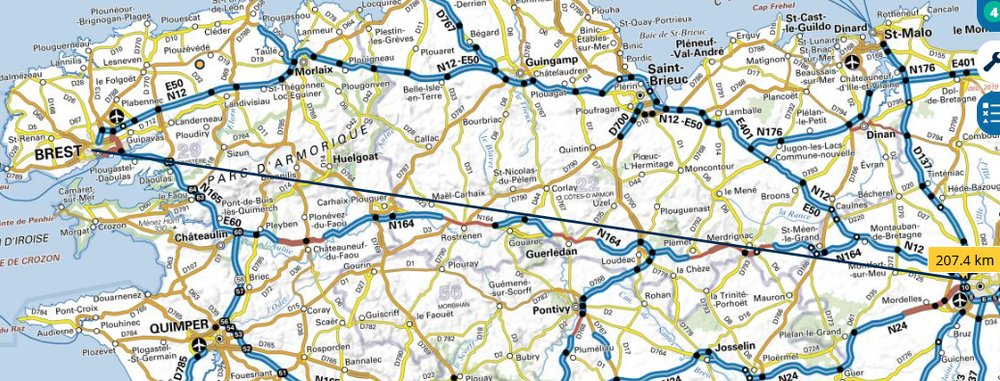

Réservé à l’enseignant
Correction – La triangulation
1 Question 1 – L’angle γ
γ = 180° − α − β = 180 − 48,28 − 119,04 = 12,68°.
2-3 Questions 2 et 3 – Loi des sinus
b = c × sin βsin γ = 52 × sin(119,04°)sin(12,68°) ≈ 207,11 km
a = c × sin αsin γ = 52 × sin(48,28°)sin(12,68°) ≈ 176,82 km
La distance entre Brest et Rennes est d’environ 207 km. La distance entre Quimper et Rennes est d’environ 177 km (176 km si l’on tronque).
4 Question 4 – Vérification sur Géoportail
Les mesures à vol d’oiseau sur Géoportail donnent environ 176,5 km (Quimper – Rennes) et 207,4 km (Brest – Rennes) : les résultats obtenus sont pertinents.

